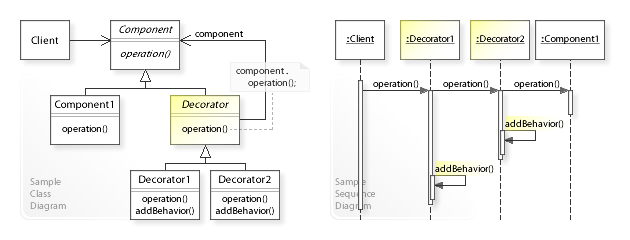
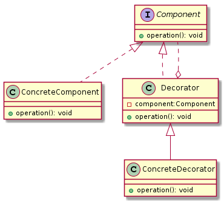
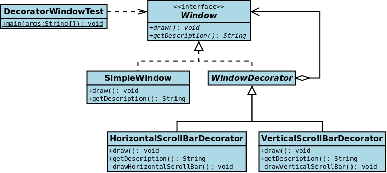

装饰器模式(Decorator Pattern)

定义： 在面向对象的编程中，装饰器模式是一种设计模式，又名包装(Wrapper)，它允许动态地将行为添加到单个对象，而不会影响来自同一类的其他对象的行为。
类型：
类比：
UML

Decorator设计模式可以解决哪些问题？
应在运行时动态地将责任添加到对象中（并从中删除）。
应提供用于扩展功能（继承）的子类化的灵活替代方案。
Decorator设计模式描述了什么解决方案？ 定义那些Decorator对象
Component通过将所有请求转发给它来透明地实现扩展（装饰）对象的接口在转发请求之前/之后执行其他功能。
在装饰器模式中的角色有：
抽象构件(Component)角色： 具体构件(ConcreteComponent)角色： 装饰(Decorator)角色： 具体装饰(ConcreteDecorator)角色:
Pattern
Intent
Adapter or Wrapper
Converts one interface to another so that it matches what the client is expecting
Decorator
Dynamically adds responsibility to the interface by wrapping the original code
Delegation(委派模式)
Support “composition over inheritance”
Facade
Provides a simplified interface
装饰器实例

抽象构件(Component)角色： 1
2
3
4
5
6
7
8
9
10
public interface Window
void draw ()
* Returns a description of window
* @return Description
*/
String getDescription () ;
}
具体构件(ConcreteComponent)角色： 1
2
3
4
5
6
7
8
9
10
11
public class SimpleWindow implements Window
@Override
public void draw ()
System.out.println("Draw simple window..." );
}
@Override
public String getDescription ()
return "Simple Window" ;
}
}
装饰(Decorator)角色： 1
2
3
4
5
6
7
8
9
10
11
12
13
14
15
16
17
18
19
20
21
public abstract class WindowDecorator implements Window
protected Window windowToBeDecorated;
public WindowDecorator (Window windowToBeDecorated)
this .windowToBeDecorated = windowToBeDecorated;
}
@Override
public void draw ()
windowToBeDecorated.draw();
}
@Override
public String getDescription ()
return windowToBeDecorated.getDescription();
}
}
具体装饰(ConcreteDecorator)角色: 1
2
3
4
5
6
7
8
9
10
11
12
13
14
15
16
17
18
19
20
21
22
23
24
25
26
27
28
29
30
31
32
33
34
35
36
37
38
39
40
41
42
43
44
45
46
47
48
49
50
51
public class HorizontalScrollBarDecorator extends WindowDecorator
public HorizontalScrollBarDecorator (Window windowToBeDecorated)
super (windowToBeDecorated);
}
@Override
public void draw ()
super .draw();
this .drawHorizontalScrollBar();
}
* 绘制水平滚动条
*/
private void drawHorizontalScrollBar ()
System.out.println("Draw the horizontal scrollbar..." );
}
@Override
public String getDescription ()
return super .getDescription() + ", including horizontal scrollbars" ;
}
}
public class VerticalScrollBarDecorator extends WindowDecorator
public VerticalScrollBarDecorator (Window windowToBeDecorated)
super (windowToBeDecorated);
}
@Override
public void draw ()
super .draw();
this .drawVerticalScrollBar();
}
* 绘制垂直滚动条
*/
private void drawVerticalScrollBar ()
System.out.println("Draw the vertical scrollbar..." );
}
@Override
public String getDescription ()
return super .getDescription() + ", including vertical scrollbars" ;
}
}
客户端： 1
2
3
4
5
6
7
8
9
10
11
12
13
14
15
16
17
18
19
20
21
22
23
public class DecoratedWindowTest
public static void main (String[] args)
final Window window = new SimpleWindow();
final VerticalScrollBarDecorator verticalScrollBarDecorator = new VerticalScrollBarDecorator(window);
final HorizontalScrollBarDecorator horizontalScrollBarDecorator = new HorizontalScrollBarDecorator(verticalScrollBarDecorator);
horizontalScrollBarDecorator.draw();
System.out.println(horizontalScrollBarDecorator.getDescription());
}
}
装饰器模式的优缺点 优点
装饰器模式与继承关系的目的都是要扩展对象的功能，但是装饰器模式可以提供比继承更多的灵活性。装饰器模式允许系统动态决定贴上一个需要的装饰，或者除掉一个不需要的装饰。继承关系是不同，继承关系是静态的，它在系统运行前就决定了
通过使用不同的具体装饰器以及这些装饰类的排列组合，设计师可以创造出很多不同的行为组合
缺点
由于使用装饰器模式，可以比使用继承关系需要较少数目的类。使用较少的类，当然使设计比较易于进行。但是另一方面，由于使用装饰器模式会产生比使用继承关系更多的对象，更多的对象会使得查错变得困难，特别是这些对象看上去都很像。
装饰器模式和适配器模式的区别 其实适配器模式也是一种包装（Wrapper）模式，它们看似都是起到包装一个类或对象的作用，但是它们使用的目的非常不一样：
适配器模式的意义是要将一个接口转变成另外一个接口，它的目的是通过改变接口来达到重复使用的目的
装饰器模式不要改变被装饰对象的接口，而是恰恰要保持原有的接口，但是增强原有接口的功能，或者改变元有对象的处理方法而提升性能